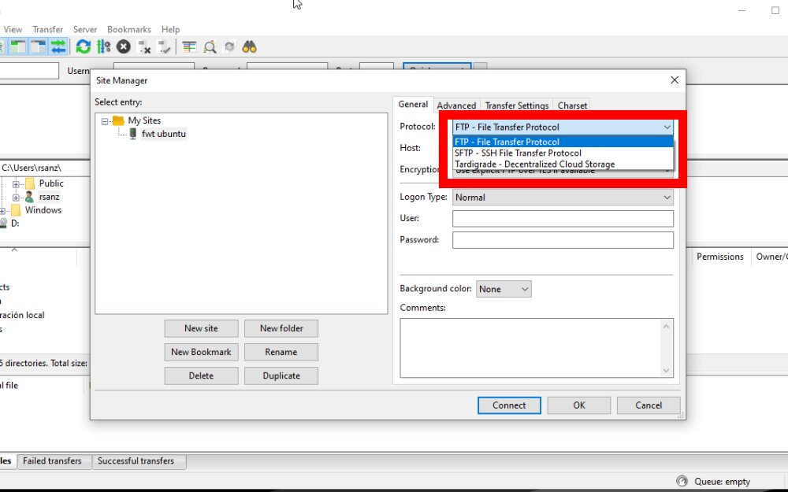

Frequently Asked Questions
General
Privacy
- What kind of personal data do you collect and why?
- Okay, I trust you, but you don't manage the underlying infrastructure, so can I trust in your provider?
Web VPS
- For how long I will be able to use this tool?
- When I click the "Access to the server" button, it shows an error
- How can I upload a file to the tool?
- How can I download a file from the tool?
- If I reboot the VPS, will I be able to connect to it after that?
- Network Ports
- How can I use Ctrl, Alt, F-keys, etc. on my phone/tablet?
- Copy / Paste
- (Windows) How to connect to an SSH VPS with PuTTY?
- (Windows) How to connect to an SSH VPS with MobaXTerm?
- (Linux) How to connect to an SSH VPS with a Terminal?
- More tutorials and news
"Serverless" Command Line Tool
- What is "Serverless" Command Line Tool?
- Which commands can I use?
- For how long will uploaded files remain on the system?
- I've executed a command and I haven't seen any result
- I can't use "wget" to download a file
More VPS tutorials
- (Windows) How to connect to an SSH VPS with PuTTY (with private key)?
- (Linux) How to connect to an RDP VPS with Remmina?
- (Windows) How to connect to an RDP VPS with Remote Desktop?
- How to transfer files between my computer and VPS with Filezilla?
- (Windows) How to connect to an SSH VPS with MobaXTerm (with private key)?
- Linux) How to connect to an SSH VPS with a Terminal (with private key)?
- (Linux) How to mount a remote filesystem with sshfs?
- How to install Jitsi (Free Video Conferencing Service)?
- How to configure a RTMP server?
General
You offer several free tools, what's the trick?
- There's no "trick". This web is more a hobby project than a way to make money. The tools I offer are limited (see sections below) and I adjust these limits so that the expenses involved in this project do not exceed my budget.
Privacy
What kind of personal data do you collect and why?
- Check our Privacy Policy.
Okay, I trust you, but you don't manage the underlying infrastructure, so can I trust in your provider?
- My provider, Amazon Web Services (AWS) is the biggest cloud company in the world and it takes security very seriously. You can read its Data Privacy FAQ in this link.
Web VPS
For how long I will be able to use this tool?
- Maximum usage time for every VPS is 3 hours.
When I click the "Access to the server" button, it shows an error
- Maybe the tool isn't configured yet, try uploading the page.
How can I upload a file to the tool?
- The simplest way is uploading to any cloud storage service (like mine) and then using "wget" command:
wget https://f.rs1.es/1234/file.pdf
- You can use an SFTP client with these parameters:
Server: SERVER-IP / Username: webvps / Password: webpwd / Port: 22
How can I download a file from the tool?
- There are several ways. First option is the preferred one:
- Web server
- Set up a simple webserver with this command:
sudo python3 -m http.server 80
- In another browser window (or tab), type "http://[SERVER-PUBLIC-IP]". You will be able to download any file inside the folder in which you executed the python command.
- SFTP (Filezilla)
- Server: SERVER-IP / Username: webvps / Password: webpwd / Port: 22
- SSHFS
-
sshfs webvps@SERVER-IP:/home/webvps/ /your-local-folder/ #for unmount umount /your-local-folder/
If I reboot the VPS, will I be able to connect to it after that?
- Yes, you can perform a reboot and you can connect to the server after the start-up period.
Network Ports
- For security reasons, open inbound and outbound ports are restricted to the following:
- Inbound ports: All TCP ports, ICMP.
- Outbound ports: 80 (TCP), 443 (TCP), ICMP (and all responses to inbound traffic).
How can I use Ctrl, Alt, F-keys, etc. on my phone/tablet?
- You can download "Hacker's Keyboard" in the Play Store (Android).
Copy / Paste
- You can copy from tool just by selecting the text.
- You can paste to the tool with Ctrl + Shift + V or with a right-click and select "Paste".
(Windows) How to connect to an SSH VPS with PuTTY?
- Open PuTTY.
- Type the public IP or the public DNS on the "Host Name" input box.
- Click on "Connection > Data" and type the username on "Auto-login username".
- Go back to "Session" on the left menu and type a name for the connection inside "Saved sessions" input box.
- Click "Save".
- Click "Open".
(Windows) How to connect to an SSH VPS with MobaXTerm?
- Click "Session" icon at the top-left.
- Click "SSH".
- Type the public IP or the public DNS on "Remote Host".
- Click on "Specify username" and type the username.
- Click on "Bookmark settings" and type a Session Name.
- Click "OK".
- Double-click on the session name (on the left menu) to connect.
(Linux) How to connect to an SSH VPS with a Terminal?
- You probably have an SSH client installed on your system. Check it by typing
sshin the Terminal. If it's not installed, you can install "openssh-client". - Type this command:
ssh [username]@[public IP or public DNS]ssh cltool@123.456.789
- If the terminal shows this question: "Are you sure you want to continue connecting (yes/no/[fingerprint])?, type "yes" to save the fingerprint of the key.
- It will ask you the password.
More tutorials and news
- In our subreddit r/RS1FreeWebTools we post useful tips and tutorials for all web tools, and every new feature we add.
"Serverless" Command Line Tool
What is "Serverless" Command Line Tool?
- In this case, "Serverless" means you can't access the VPS directly, but with an API that sends your command, processes it, and receives the output.
- This system allows to improve server specs (6 vCPU, 10GB RAM) because server only runs when you send a command, but it's more restricted than a regular VPS.
Which commands can I use?
- You can use a lot of programs, like GhostScript (gs), Python (python3.8), GraphicsMagick (gm), Java (java, javac), Libreoffice (libreoffice) and many of the basic commands like tar, zip, man, etc.
For how long will uploaded files remain on the system?
- Files uploaded will remain for 2-3 hours unless you delete them before.
- Files downloaded will be publicly available for 1 day.
I've executed a command and I haven't seen any result
- This web-based CLI has some limits:
- Every command needs to finish by itself (in other words, it cannot show any prompt). Try using "-y" in your command to automatically answer yes to prompts.
- Command execution can't last more than 60 seconds.
I can't use "wget" to download a file
- Due to network restrictions, "wget" is not installed, but there is a similar custom tool called "get" you can use to download a file to the Serverless VPS.
More VPS tutorials
(Windows) How to connect to an SSH VPS with PuTTY (with private key)?
- Download the Private Key.
- You need to change the Private Key format to PPK. To do so, open PuTTYgen. It was installed with PuTTY.
- Click on "Load".
- Click on "PuTTY Private Key Files" at the bottom-right corner and select "All Files (*)"
- Select the Private Key and click OK.
- Click on "Save private key". You can set up a password for the key if you want.
- Open PuTTY.
- Type the public IP or the public DNS on the "Host Name" input box.
- On the left menu, click on "Connection > SSH > Auth"
- Select your PPK file by clicking on "Browse".
- Click on "Connection > Data" and type the username on "Auto-login username".
- Go back to "Session" on the left menu and type a name for the connection inside "Saved sessions" input box.
- Click "Save".
- Click "Open".
(Windows) How to connect to an RDP VPS with Remote Desktop?
- Type the public DNS on "Computer" input box.
- Click on "Show options" and type the username.
- Click "Connect".
How to transfer files between my computer and VPS with Filezilla?
- Download Private Key.
- In Filezilla, click on the top-left icon ("Site Manager").
- Click on "New site" and type a name for the connection.
- In "Protocol" select "SFTP".

- Type the public IP or the public DNS on "Host".
- In "Logon Type", select "Key File".
- Type the username.
- Click "Browse" to select the private key file. In the pop-up window, select "PEM files" at the bottom-right corner and select the private key.
- Finally, click "Connect".
(Windows) How to connect to an SSH VPS with MobaXTerm (with private key)?
- Download the Private Key.
- Click "Session" icon at the top-left.
- Click "SSH".
- Type the public IP or the public DNS on "Remote Host".
- Click on "Specify username" and type the username.
- Click on "Advanced SSH settings".
- Click on "Use private key" and click on the file icon inside the input box.
- Select the Private Key
- Click on "Bookmark settings" and type a Session Name.
- Click "OK".
- Double-click on the session name (on the left menu) to connect.
(Linux) How to connect to an SSH VPS with a Terminal (with private key)?
- Download the Private Key.
- You probably have an SSH client installed on your system. Check it by typing
sshin the Terminal. If it's not installed, you can install "openssh-client". - The first time, you need to change the Private Key file permissions: type
chmod 600 [private key file] - Type this command:
ssh -i [private key file] [username]@[public IP or public DNS]ssh -i ./frewebtools_eur_key.pem ubuntu@123.456.789
- If the terminal shows this question: "Are you sure you want to continue connecting (yes/no/[fingerprint])?, type "yes" to save the fingerprint of the key.
(Linux) How to connect to an RDP VPS with Remmina?
- In Remmina, click on the top-left icon: "New connection profile".
- Select the RDP Protocol.
- Type a Name for the connection.
- Type the public IP or public DNS on "Server" field and the username and password in their respective fields.
- You can choose the window resolution (client resolution, custom, etc.).
- Click on "Save and connect".
(Linux) How to mount a remote filesystem with sshfs?
- Download the Private Key.
- SSHFS is a program that is usually installed with ssh.
- You need to set a mount point by creating a folder. You can name it whatever you want.
mkdir remotefolder
- Type this command:
sshfs [username]@[ip]:[remote path] [mount point] -o IdentityFile=[private key file path (full path)]
For example:sshfs ubuntu@123.456.789:/home/ubuntu mounts/sshfs/ -o IdentityFile=/home/user/Documents/frewebtools_eur_key.pem
- To unmount:
umount [mount point]
How to install Jitsi (Free Video Conferencing Service)?
- I recommend using a 2GB RAM VPS, but my 1GB VPS can handle 3-4 users meetings.
- These ports need to be open:
- 80 (TCP)
- 443 (TCP)
- 10000 (UDP)
- You need a domain (for example: 'example.com') and configure your domain DNS to the VPS public IP (meet.example.com A 85.526.56.589).
- Start an Ubuntu VPS.
- Login through SSH.
- Execute these commands:
#Login as root and download Jitsi sudo su - echo 'deb https://download.jitsi.org stable/' >> /etc/apt/sources.list.d/jitsi-stable.list wget -qO - https://download.jitsi.org/jitsi-key.gpg.key | apt-key add - apt update #Increase default limits, Jitsi need it for working echo 'DefaultLimitNOFILE=65000' >> /etc/systemd/system.conf echo 'DefaultLimitNPROC=65000' >> /etc/systemd/system.conf echo 'DefaultTasksMax=65000' >> /etc/systemd/system.conf systemctl daemon-reload #Install Jitsi apt -y install jitsi-meet #Installation will ask for the configured domain and if you want to generate certificates. Accept first option. #Install LetsEncrypt certificates /usr/share/jitsi-meet/scripts/install-letsencrypt-cert.sh #Type an email
- Allowing authentication:
#You can use your preferred editor (YOUR_DOMAIN is your configured URL, like meet.example.com): vim /etc/prosody/conf.avail/YOUR_DOMAIN.cfg.lua #Look for this line and modify it: VirtualHost "YOUR_DOMAIN" authentication = "internal_hashed" #Add: VirtualHost "guest.YOUR_DOMAIN" authentication = "anonymous" modules_enabled = { "turncredentials"; } c2s_require_encryption = false #Save changes and close your editor vim /etc/jitsi/meet/YOUR_DOMAIN-config.js #Look for this line and modify it: var config = { hosts: { domain: 'YOUR_DOMAIN', anonymousdomain: 'guest.YOUR_DOMAIN', #More code... }, #More code... } #Save changes and close editor echo 'org.jitsi.jicofo.auth.URL=XMPP:YOUR_DOMAIN' >> /etc/jitsi/jicofo/sip-communicator.properties #Add a user (replace USERNAME, YOUR_DOMAIN and PASSWORD with your info): prosodyctl register USERNAME YOUR_DOMAIN PASSWORD systemctl restart prosody systemctl restart jicofo systemctl restart jitsi-videobridge2 - Now, you can access YOUR_DOMAIN and put the USERNAME and PASSWORD.
- Type a meeting name (I recommend you type a long name).
- Users can access the meeting by typing YOUR_DOMAIN/MEETING_NAME.
How to configure a RTMP server?
- I recommend using a 2GB VPS.
- I will use an Amazon Linux 2 server.
- These ports need to be open:
- 1935 (TCP)
- 8080 (TCP)
- Execute these commands on the server:
sudo amazon-linux-extras install -y docker sudo service docker start sudo docker run -d -p 1935:1935 -p 8080:8080 alqutami/rtmp-hls
- Now, you can send video to RTMP server with OBS Studio
- Settings > Stream
- Server: rtmp://SERVER_IP:1935/live
- Stream Key: any text you choose.
- Receiving video from server:
- With VLC:
- File > Open network location
- You can choose RTMP or HLS protocol:
- rtmp://SERVER_IP:1935/live/STREAM_KEY
- http://SERVER_IP:8080/hls/STREAM_KEY.m3u8
- With VLC:
- Webpage with statistics: http://SERVER_IP:8080/stats